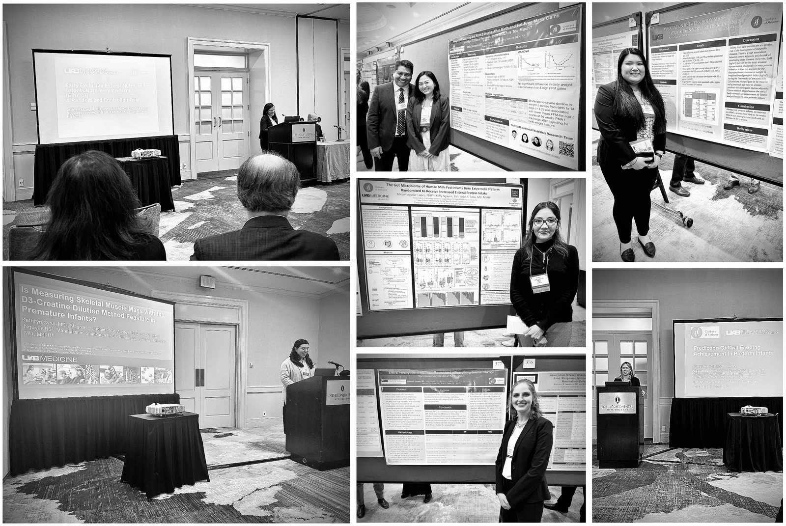

Enriching experiences at the 2023 SSPR meeting
Our neonatal nutrition research team broadened their knowledge, expanded their network, and engaged with others in their field at the Southern Society for Pediatric Research Meeting this year. Our team had the chance to hear from leading experts, to learn about cutting-edge developments, and to gain a deeper understanding of neonatal nutrition.
Our team also had the opportunity to present their latest clinical research projects in a supportive and encouraging environment for learning and growth:
* Is There an Association Between Body Mass Index and Adiposity in Very Preterm Infants? – Kelly Nguyen
* Association Between Weight Loss During the First 2 Weeks After Birth and Fat-Free Mass Gains In Infants Born Preterm – Emily Gunawan
* Enteral Feeding After the Surgical Management of Necrotizing Enterocolitis and Spontaneous Intestinal Perforation – Deborah Jensen
* Differences in Growth and Body Composition of Preterm Infants According to Race – Ariel Salas on Behalf of the U.S. Neonatal Body Composition Consortium
* Prediction of Oral Feeding Achievement in Preterm Infants – Abigail Cooley (Travel Trainee Award)
* The Gut Microbiome of Human Milk-Fed Infants Born Extremely Preterm Randomized to Receive Increased Enteral Protein Intake – Miriam Aguilar (Travel Trainee Award)
* Is Measuring Skeletal Muscle Mass with the D3-Creatine Dilution Method Feasible In Premature Infants? – Kathryn Cyrus (Travel Trainee Award)
* Early And Exclusive Enteral Nutrition in Very Preterm Infants: A Randomized Trial – Jackie Razzaghy (Clinical Science Young Investigator Award)

Being in an environment filled with passion and excitement for science renewed our sense of purpose!